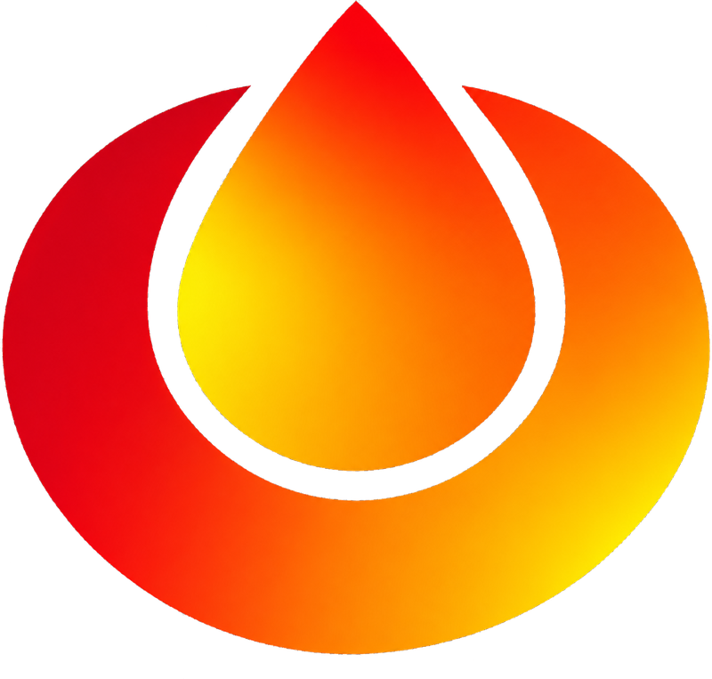

Lubricantes
Aceites para motor, transmisión y maquinaria pesada.
Ver lubricantes
OILUBCentro de lubricación · Maracaibo · San Francisco
Lubricantes, filtros, baterías y cambio de aceite para vehículos livianos y pesados, todo en un solo lugar y con atención rápida.
Aceites originales
Atención rápida
Precios competitivos
Sedes estratégicas
Tienda en línea
Lubricantes, filtros, baterías y aditivos de las mejores marcas, a precios competitivos. Elige tus productos y te atendemos por WhatsApp.
Ir al catálogo en líneaAceites para motor, transmisión y maquinaria pesada.
Ver lubricantesDe aceite, aire y combustible para cada modelo.
Ver filtrosArranque seguro con baterías para todo tipo de vehículo.
Ver bateríasProtección y limpieza para prolongar la vida del motor.
Ver aditivosAtención ágil para tu carro, camioneta o moto.
Te ayudamos a saber cuándo toca cambiarlos.
Te recomendamos lo que tu motor realmente necesita.
Av. Universidad con Av. 10
Lunes a domingo, 7:30 am – 6:00 pm
Cómo llegarAv. 48 vía La Cañada
Lunes a domingo, 7:30 am – 6:00 pm
Cómo llegarEn OILUB distribuimos lubricantes y operamos centros de servicio automotriz en el estado Zulia. Trabajamos con marcas reconocidas, precios competitivos y atención rápida para que cuidar tu vehículo sea fácil.
Escríbenos y te ayudamos a elegir.
Escribir por WhatsApp